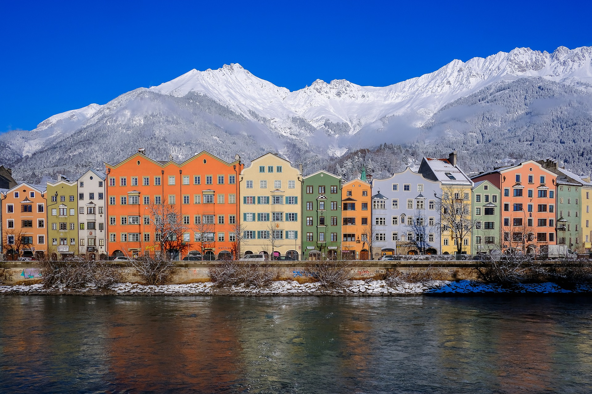

Quelle Bild: Pixabay
Touren
Stubaital Wildwasser Tour
Wir sind der erste und einzige Raftinganbieter im Stubaital - und die Wildwassertour auf der Ruetz ist das absolute Herzstück unseres Tourenprogramms. Hier geht's voll ab: Die Ruetz ist verblockt, wuchtig und fordert euch ziemlich stark heraus. Für Anfänger geeignet, aber trotzdem ganz schön wild - genau das Richtige für alle, die Action und Adrenalin wollen und keine Angst haben, richtig nass zu werden!
City Rafting Innsbruck
Ihr wollt Innsbruck aus ganz neuer Perspektive entdecken? Oder sucht ihr einfach nur eine Abkühlung? Dann haben wir genau das Richtige für euch! Beim City Rafting in Innsbruck entdeckt ihr die Hauptstadt der Alpen ganz entspannt vom Wasser aus. Der Inn ist nicht umsonst Namensgeber der Stadt, er bietet die perfekte Strecke für eine Sightseeingtour der ganz besonderen Art: Wir paddeln mitten durch die Stadt, treiben vorbei an Sandbänken und Sehenswürdigkeiten, und das alles vor der Kulisse der Nordkette und des umliegenden Bergpanoramas.
